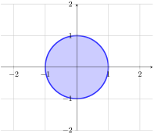
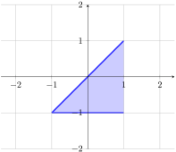
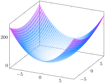
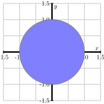
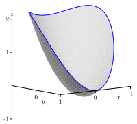
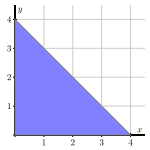
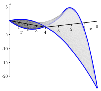
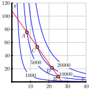

Subsection2.5.1Review of Single-Variable Optimization
Activity2.5.1.
Let \(f(x)\) be the cubic function whose graph is shown below.
(a)
Which of the following statements is true of the local extrema or relative extrema of \(f\text{?}\)
\(f\) does not have any local extrema.
\(f\) has a local max at \(x = -2\) and a local min at \(x = 1\text{.}\)
\(f\) has a local max at \(x = 1\) and a local min at \(x = -2\text{.}\)
\(f\) has a local max at \(x = -2\) and a local min at \(x = 0\text{.}\)
(b)
Which of the following statements is true of the global extrema or absolute extrema of \(f\) on the interval \([0, 2]\text{?}\)
\(f\) has a global min at \(x = 0\) and global max at \(x = 2\text{.}\)
\(f\) has a global min at \(x = 2\) and global max at \(x = 0\text{.}\)
\(f\) has a global min at \(x = 1\) and global max at \(x = 2\text{.}\)
\(f\) has a global min at \(x = 1\) and no global max.
(c)
Which of the following statements is true of the global extrema or absolute extrema of \(f\) on the interval \([0, 2)\text{?}\)
\(f\) has a global min at \(x = 0\) and global max at \(x = 2\text{.}\)
\(f\) has a global min at \(x = 2\) and global max at \(x = 0\text{.}\)
\(f\) has a global min at \(x = 1\) and global max at \(x = 2\text{.}\)
\(f\) has a global min at \(x = 1\) and no global max.
(d)
Which of the following statements is true of the global extrema or absolute extrema of \(f\) on the interval \((-\infty, 2)\text{?}\)
\(f\) does not have any global extrema.
\(f\) has a global max at \(x = -2\) and a global min at \(x = 1\text{.}\)
\(f\) has a global max at \(x = -2\) and no global min.
\(f\) has a global max at \(x = 1\) and a global min at \(x = -4\text{.}\)
When optimizing a function of a single variable, we have several tools at our disposal which are straightforward to apply. The Extreme Value Theorem states that a continuous function will always have a global max or min when considered over a closed and bounded interval. (However, as we saw above it may or may may not have a global extrema when the interval is not closed or not bounded.) We also know that the global extrema will occur either at critical points (i.e. values of \(x\) where \(f'(x) = 0\) or \(f'(x)\) is undefined) or at the endpoints of the closed interval. Thus we may find the global extrema by evaluating \(f\) at the critical points and the endpoints of the interval, and then locating the largest and smallest values. (This is known as the closed interval method.)
Definition2.5.1.
Let \(f\) be a function of two variables \(x\) and \(y\text{.}\)
The function \(f\) has a local maximum at a point \((x_0,y_0)\) provided that \(f(x,y) \leq f(x_0,y_0)\) for all points \((x,y)\) near \((x_0,y_0)\text{.}\) In this situation we say that \(f(x_0, y_0)\) is a local maximum value.
The function \(f\) has a local minimum at a point \((x_0,y_0)\) provided that \(f(x,y) \geq f(x_0,y_0)\) for all points \((x,y)\) near \((x_0,y_0)\text{.}\) In this situation we say that \(f(x_0, y_0)\) is a local minimum value.
An absolute maximum point is a point \((x_0,y_0)\) for which \(f(x,y)\leq f(x_0,y_0)\) for all points \((x,y)\) in the domain of \(f\text{.}\) The value of \(f\) at an absolute maximum point is the maximum value of \(f\text{.}\)
An absolute minimum point is a point such that \(f(x,y) \geq f(x_0,y_0)\) for all points \((x,y)\) in the domain of \(f\text{.}\) The value of \(f\) at an absolute minimum point is the minimum value of \(f\text{.}\)
The same principles apply when locating the global extrema of a function of two variables. However, we must extend the notions of closed and bounded interval, endpoint, and critical point appropriately to \(\R^n\text{.}\)
Subsection2.5.2Closed and Bounded Subsets of \(\R^n\)
Let \((x_0,y_0)\) be a fixed point in \(\R^2\) and let \(r\) be a positive real number. We will denote the set of all points in \(\R^2\) that are within a distance \(r\) of \((x_0,y_0)\) by
These sets are called open disks or open balls. Open disks in \(\R^n\) are defined similarly: \(B_r(\vx_0) = \{ \vx \in \R^n : |\vx - \vx_0| \lt r \}\text{.}\) A subset \(S\) of \(\R^2\) is said to be open if for every point \((x,y) \in S\) there exists a positive real number \(r\) such that \(B_r(x,y) \subseteq S\text{.}\) A subset \(S\) of \(\R^2\) is said to be closed if its complement is open.
Activity2.5.2.
Let \(S\) be the subset of \(\R^2\) defined by \(x^2 + y^2 \leq 1\text{.}\)

Which is the best reason \(S\) is closed?
At every point inside of \(S\text{,}\) you can center a small open disk that is contained in \(S\text{.}\)
At every point outside of \(S\text{,}\) you can center a small open disk that does not touch \(S\text{.}\)
The distance of every point outside of \(S\) to the origin is more than 1.
The distance of every point inside of \(S\) to the origin is less than 1.
A point \((x,y)\) in \(\R^2\) is called a boundary point of \(S\) if every open disk centered at \((x,y)\) contains points both in \(S\) and not in \(S\text{.}\)
The subset of \(\R^2\) of all boundary points of \(S\) is called the boundary of \(S\) and is denoted by \(\partial S\text{.}\)
Activity2.5.4.
Let \(S\) be the subset of \(\R^2\) defined by
\begin{equation*}
y \leq x \lt 1
\end{equation*}
\begin{equation*}
-1 \leq y \leq 1\text{.}
\end{equation*}

Which of the following is not a boundary point of \(S\text{?}\)
\(\displaystyle (-1,-1)\)
\(\displaystyle (0,0)\)
\(\displaystyle (1,1)\)
\(\displaystyle (0,-1)\)
\(\displaystyle (0,1)\)
\(\displaystyle (1,-1)\)
Activity2.5.5.
Let \(S\) be the subset of \(\R\) defined by
\begin{equation*}
-3 \lt x \leq 2
\end{equation*}
(a)
Is \(S\) open, closed, both, or neither? Justify your answer.
(b)
Find the set \(\partial S\text{.}\)
Bounded Set.
A subset \(S\) of \(\R^2\) is called bounded if there is some open disk \(D\) such that \(S\) is a subset of \(D\text{.}\) In other words, the disk completely covers \(S\text{.}\)
Activity2.5.6.
Let \(S\) be the subset of \(\R^2\) defined by
\begin{equation*}
x - 1 \lt y \leq x + 1\text{.}
\end{equation*}
(a)
Sketch the set \(S\)
(b)
Is \(S\) open, closed, both, or neither? Justify your answer.
(c)
What is \(\partial S\text{?}\)
(d)
Is the \(S\) bounded?
Activity2.5.7.
Let \(S\) be the subset of \(\R^2\) defined by
\begin{equation*}
y^2 - 1 \leq x \leq y + 1\text{.}
\end{equation*}
(a)
Sketch the set \(S\)
(b)
Is \(S\) open, closed, both, or neither? Justify your answer.
(c)
What is \(\partial S\text{?}\)
(d)
Is the \(S\) bounded?
The extreme value theorem applies to continuous functions on closed, finite intervals in \(\R\text{.}\) Now that we know what a closed and bounded subset of \(\R^n\) is we can state the analogous result for function so \(n\) variables.
The Extreme Value Theorem.
Let \(f= f(x,y)\) be a continuous function on a closed and bounded region \(R\text{.}\) Then \(f\) has an absolute maximum and an absolute minimum in \(R\text{.}\)
Subsection2.5.3Critical Points and The Second Derivative Test
Fermat’s Theorem from calculus states that any local extremum of a function must occur at a point where the derivative is zero. This helps locate global extrema because we know that they must occur either at (a) points with zero derivative, (b) endpoints of the closed interval, or (c) points where the derivative is undefined.
This observation motivates the definition of critical points. A point \(x_0\) in the domain of \(f\) is a critical point if either \(f'(x_0) = 0\) or \(f'(x_0)\) is undefined.
Definition2.5.2.
A critical point \((x_0,y_0)\) of a function \(f=f(x,y)\) is a point in the domain of \(f\) at which \(f_x(x_0,y_0) = 0\) and \(f_y(x_0,y_0) = 0\text{,}\) or such that one of \(f_x(x_0,y_0)\) or \(f_y(x_0,y_0)\) fails to exist.
Activity2.5.8.
Find the critical points of each of the following functions. Then, using appropriate technology, plot the graphs of the surfaces near each critical point and compare the graph to your work.
\(\displaystyle f(x,y) = 2+x^2+y^2\)
\(\displaystyle f(x,y) = 2 + x^2 - y^2\)
\(\displaystyle f(x,y) = 2x-x^2-\frac{1}{4}y^2\)
\(\displaystyle f(x,y) = |x| + |y|\)
\(f(x,y) = 2xy - 4x + 2y - 3\text{.}\)
Let’s consider what the graph of a function \(f(x,y)\) looks like near some critical points \((x_0,y_0)\text{.}\) Below is the graph and a contour plot for the function \(f(x,y) = 10 - (x^2 + y^2)\) near the critical point \((0,0)\text{.}\) Notice that \((0,0)\) is a local maximum.
Figure2.5.3.A local maximum.
Next, is the graph and a contour plot for the function \(f(x,y) = 3x^2 + y^2\) near the critical point \((0,0)\text{.}\) Notice that it is a local minumum.

Figure2.5.4.A local minimum.
Finally, consider the graph and contour plot for the function \(f(x,y) = x^2 - y^2\) near the critical point \((0,0)\text{.}\) Notice that if you travel through the critical point in one direction it appears as a local maximum, but in the other direction it appears as a local minimum. We call this a saddle point.
Figure2.5.5.A saddle point.
Just as in the single-variable case, not every critical point corresponds to a local extremum. Consider, for example, the function \(f(x) = x^3\) at the origin. In order, to identify which local extrema are maxima, which are minima, and which are neither, we can use the second derivative test. If \(x_0\) is a critical point of the function \(f\text{,}\) then \(f''(x_0) \gt 0\) implies that it’s a local minimum, \(f'(x_0) \lt 0\) implies that it’s a local maximum, and \(f''(x_0) = 0\) does not provide any additional information.
For functions of two variables, we will use a version of the second deriviative test that takes into account all the second derivatives of the function.
The Second Derivative Test.
Suppose \((x_0,y_0)\) is a critical point of the function \(f\) for which \(f_x(x_0,y_0) = 0\) and \(f_y(x_0,y_0) = 0\text{.}\) Let \(D\) be the quantity defined by
\begin{equation*}
D = f_{xx}(x_0,y_0) f_{yy}(x_0,y_0) - f_{xy}(x_0,y_0)^2.
\end{equation*}
If \(D>0\) and \(f_{xx}(x_0,y_0) \lt 0\text{,}\) then \(f\) has a local maximum at \((x_0,y_0)\text{.}\)
If \(D>0\) and \(f_{xx}(x_0,y_0) > 0\text{,}\) then \(f\) has a local minimum at \((x_0,y_0)\text{.}\)
If \(D \lt 0\text{,}\) then \(f\) has a saddle point at \((x_0,y_0)\text{.}\)
If \(D = 0\text{,}\) then this test yields no information about what happens at \((x_0,y_0)\text{.}\)
The quantity \(D\) is called the discriminant of the function \(f\) at \((x_0,y_0)\text{.}\)
Recall that we can collect all the second derivatives of a function into a symmetric matrix called the Hessian matrix.
The discriminant \(D\text{,}\) described above, is the determinant of the Hessian matrix.
\begin{equation*}
D = \det(\hess(f))
\end{equation*}
Recall, also, that every symmetric matrix is diagonalizable over the real numbers. Let \(\lambda_1\) and \(\lambda_2\) be the eigenvalues of \(\hess(f)\text{.}\) Also, the determinant of a matrix is the product of its eigenvalues. Thus, we can write
\begin{equation*}
D = \lambda_1 \lambda_2.
\end{equation*}
If both eigenvalues are negative or positive, their product will be positive, and we are in the first case. Essentially, we are able to say that the function is concave down or concave up when viewed from any direction. If the eigenvalues have different signs, their product will be negative, and there will be on direction from which it’s concave up and one from whic it’s concave down.
Activity2.5.9.
Find the critical points of the following functions and use the Second Derivative Test to classify the critical points.
Subsection2.5.4Optimization on Closed and Bounded Domains
Just as in the 1D case, to find the absolute extrema of a differentiable function on a closed and bounded set, it suffices to search for critical points in the interior of the set and use single-variable calculus to find the extrema on the boundary. The largest and smallest of these values will the the absolute maximum and minimum of the function.
From this example, we see that we use the following procedure for determining the absolute maximum and absolute minimum of a function on a closed and bounded domain.
Step 1:.
Find all critical points of the function in the interior of the domain.
Step 2:.
Find all the critical points of the function on the boundary of the domain. Working on the boundary of the domain reduces this part of the problem to one or more single variable optimization problems. Note that there may be endpoints on portions of the boundary that need to be considered.
Step 3:.
Evaluate the function at each of the points found in Steps 1 and 2.
Step 4:.
The maximum value of the function is the largest value obtained in Step 3, and the minimum value of the function is the smallest value obtained in Step 3.
Activity2.5.10.
Suppose the temperature \(T\) at each point of a circular plate \(x^2 + y^2 \leq 1\) is given by
\begin{equation*}
T(x,y) = 2x^2 + y^2 - y
\end{equation*}
The set \(S = \{ (x,y) : x^2 + y^2 \leq 1 \}\) is closed and bounded, so we know that \(T\) attains both an absolute maximum and an absolute minimum. Find the hottest and coldest points on the plate.


Figure2.5.6.Domain of the temperature \(T(x,y) = 2x^2+y^2-y\) and its graph.
(a)
Find all the critical points of \(T\) in the interior of \(S\text{.}\)
(b)
Parameterize the boundary \(\partial S\) and use single-variable calculus to find the extreme values of \(T\) on it.
(c)
Which point among those found in the previous two tasks is the hottest? Which is the coldest?
Activity2.5.11.
Let \(f(x,y) = x^2-3y^2-4x+6y\) with triangular domain \(R\) whose vertices are at \((0,0)\text{,}\)\((4,0)\text{,}\) and \((0,4)\text{.}\) The domain \(R\) and a graph of \(f\) on the domain appear in Figure 2.5.7.


Figure2.5.7.The domain of \(f(x,y) = x^2-3y^2-4x+6y\) and its graph.
Find all of the critical points of \(f\) in \(R\text{.}\)
Parameterize the horizontal leg of the triangular domain, and use single-variable calculus to find the absolute maximum and minimum of \(f\) on that leg.
Parameterize the vertical leg of the triangular domain, and use single-variable calculus to find the absolute maximum and minimum of \(f\) on that leg.
Parameterize the hypotenuse of the triangular domain, and use single-variable calculus to find the absolute maximum and minimum of \(f\) on the hypotenuse.
Find the absolute maximum and absolute minimum values of \(f\) on \(R\text{.}\)
Sometimes it is possible to locate an absolute extremum on a non-closed or non-bounded set. For example, it’s easy to see that \(f(x) = x^2\) the local minumum at \(x = 0\) is also an absolute minimum. Just note that \(f'(x) \lt 0\) for \(x \lt 0\) and \(f'(x) \gt 0\) for \(x \gt 0\text{.}\) Hence \(f\) is always decreasing to the left of the local minimum and always increasing to the right. This means that the local minimum is also an absolute minimum. A similar argument can be made for multivariable functions. If a function has a unique local extremum which is either a local maximum or a local minimum, then it is also an absolute extremum.
If you are attempting to find the extrema of the distance function \(d(x,y) = \sqrt{x^2 + y^2}\text{,}\) it’s often easier to work with the square of the distance function
You can prove that both functions will have the same extrema, but the partial derivatives will have a simpler form.
Activity2.5.12.
Find the point on the plane \(2x + 3y + z = 2\) that is closest to the origin.
Subsection2.5.5Lagrange Multipliers
According to U.S. postal regulations, the girth plus the length of a parcel sent by mail may not exceed 108 inches, where by “girth” we mean the perimeter of the smallest end. Our goal is to find the largest possible volume of a rectangular parcel with a square end that can be sent by mail. We can think of this problem as a constrained optimization problem. We wish to optimize the volume of the parcel, but we are constrained by the fac that the girth plus the length of the parcel must not exceed 108 inches. The function to be optimized is
\begin{equation*}
f(x,y) = x^2y,
\end{equation*}
and, assuming that the volume is actually maximized when the sum of the girth and the length is exactly 108 inches, the constraint is \(4x + y = 108\text{.}\) Another way to think of the constraint is as a contour of the function
\begin{equation*}
g(x,y) = 4x + y.
\end{equation*}
at the level \(108\text{.}\) The constraint is shown below in red, along with several contours of \(f\text{.}\)

Figure2.5.8.Contours of \(f\) and the constraint equation \(g(x,y) = 108\text{.}\) It’s clear that the maximum we seek is somewhere between points \(C\) and \(D\text{.}\) Also, the maximum is characterized by the constaint and the contours being parallel (i.e. having parallel tangent lines). Equivalently, the gradient vectors of both \(f\) and \(g\) will be parallel at this point. Solving the equation
\begin{equation*}
\nabla f = \lambda \nabla g
\end{equation*}
will give us the point where the maximum volume is attained, and this method is called the method of Lagrange multipliers.
The method of Lagrange multipliers.
The general technique for optimizing a function \(f = f(x,y)\) subject to a constraint \(g(x,y)=c\) is to solve the system \(\nabla f = \lambda \nabla g\) and \(g(x,y)=c\) for \(x\text{,}\)\(y\text{,}\) and \(\lambda\text{.}\) We then evaluate the function \(f\) at each point \((x,y)\) that results from a solution to the system in order to find the optimum values of \(f\) subject to the constraint.
Activity2.5.13.
A cylindrical soda can holds about 355 cc of liquid. In this activity, we want to find the dimensions of such a can that will minimize the surface area. For the sake of simplicity, assume the can is a perfect cylinder.
What are the variables in this problem? Based on the context, what restriction(s), if any, are there on these variables?
What quantity do we want to optimize in this problem? What equation describes the constraint? (You need to decide which of these functions plays the role of \(f\) and which plays the role of \(g\) in our discussion of Lagrange multipliers.)
Find \(\lambda\) and the values of your variables that satisfy \(\nabla f = \lambda \nabla g\) in the context of this problem.
Determine the dimensions of the pop can that give the desired solution to this constrained optimization problem.
The method of Lagrange multipliers also works for functions of more than two variables.
Activity2.5.14.
Use the method of Lagrange multipliers to find the point on the plane \(2x + 3y + z = 2\) that is closest to the origin. (We already solved this problem using other methods above.)
Activity2.5.15.
Find the points in \(\R^3\) that are farthest from the origin and that lie on both the cylinder \(y^2 + z^2 = 1\) and the plane \(x + 2y + 3z = 0\text{.}\)
Activity2.5.16.
Use the method of Lagrange multipliers to find the dimensions of the least expensive packing crate with a volume of 240 cubic feet when the material for the top costs $2 per square foot, the bottom is $3 per square foot and the sides are $1.50 per square foot.